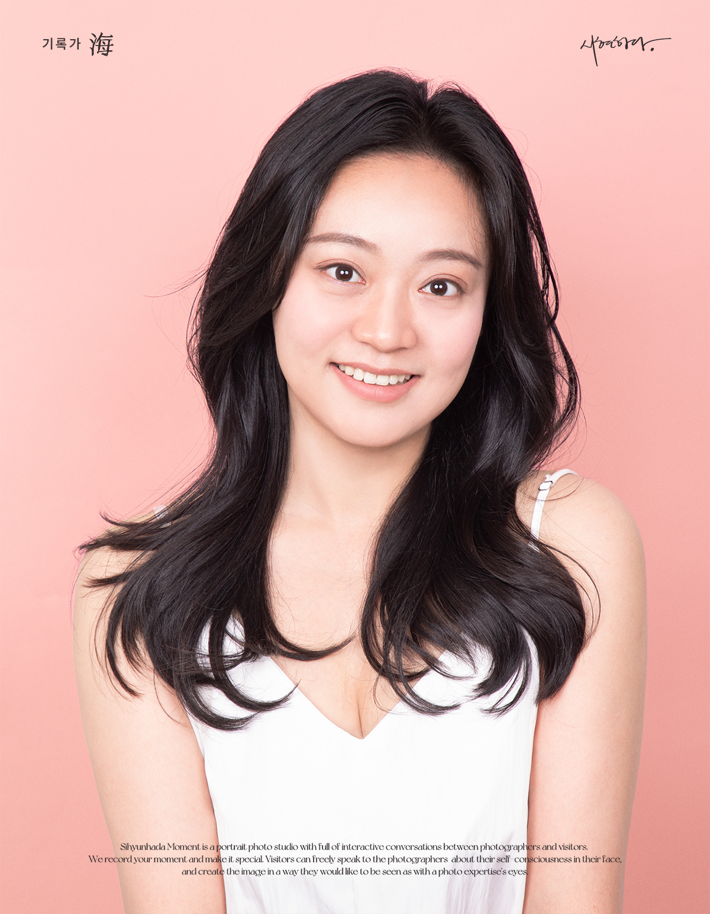
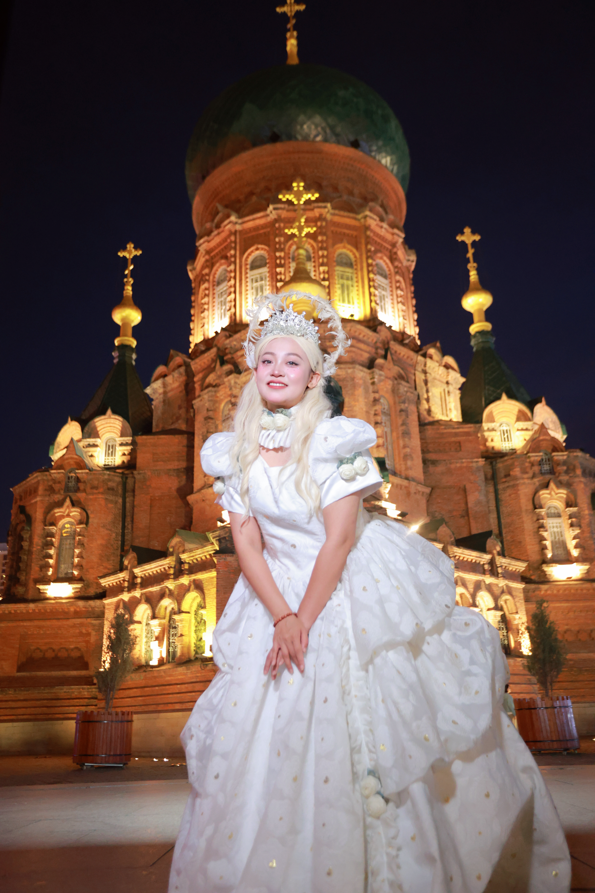
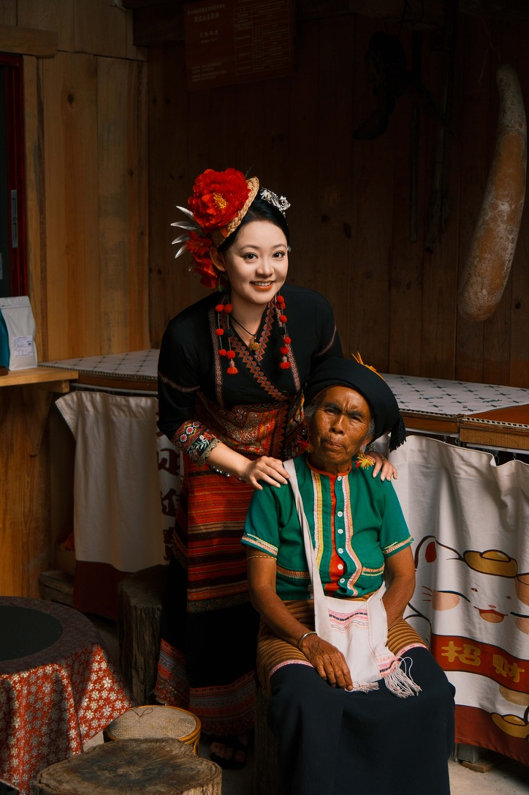
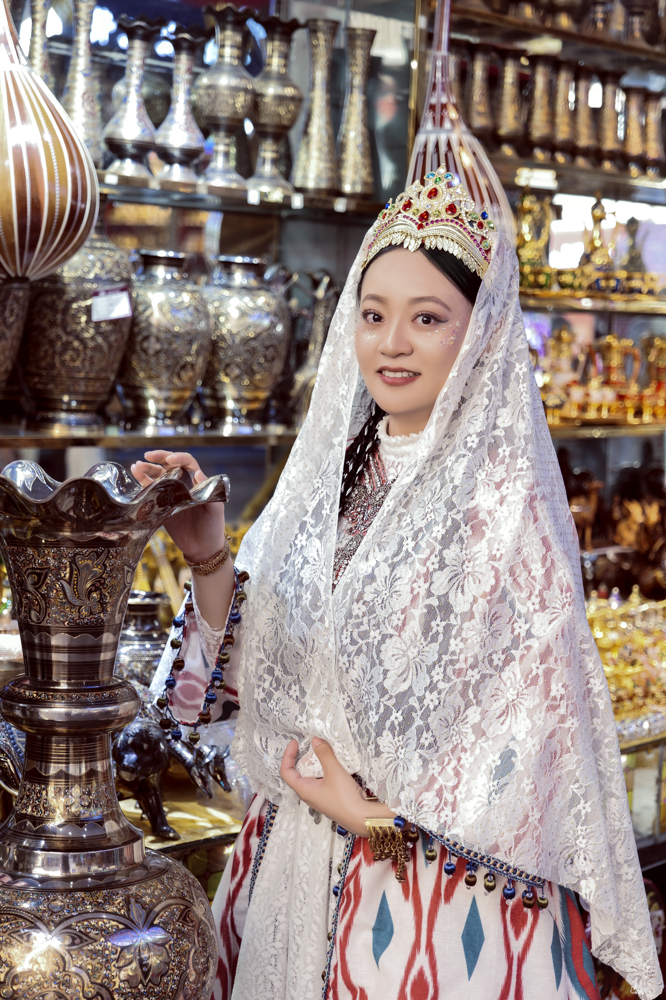
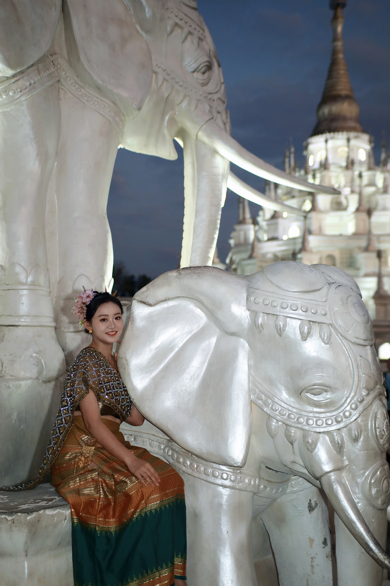
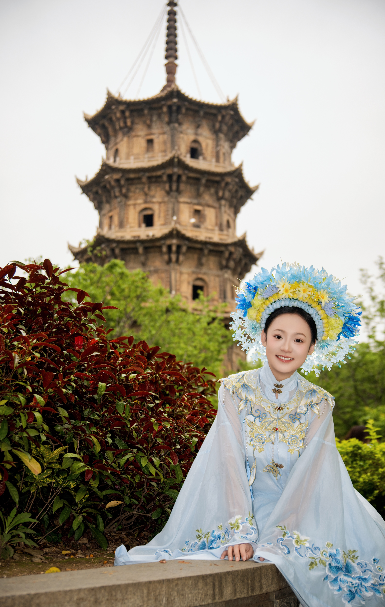

PORTRAITS · PLACES · STORIES
Different styles,
one journey.
A dozen photo stories from the road — ethnic dress, Hanfu and places I have wandered into. Click any cover to see the set and the story behind it.





